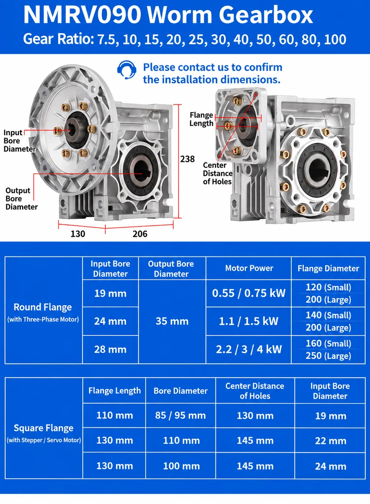

This product image presents a blue NMRV aluminum worm gear reducer for OEM and ODM industrial applications. The final ratio, input flange, output arrangement and mounting position should be confirmed for each order.
NMRV090 Installation Dimensions
The NMRV090 installation-dimensions drawing below shows the main input and output interfaces, flange arrangement and overall envelope. Check the motor flange, output bore and mounting requirements before ordering; please contact us to confirm the installation dimensions for your final configuration.
NMRV090 Technical Specifications
| Specification | NMRV090 configuration shown |
|---|---|
| Center distance | 90 mm |
| Gear ratios | 7.5, 10, 15, 20, 25, 30, 40, 50, 60, 80, 100 |
| Output bore | 35 mm |
| Round flange input bores | 19 / 24 / 28 mm |
| Square flange input bores | 19 / 22 / 24 mm |
| Motor connection options | Three-phase motor / stepper motor / servo motor |
Engineering confirmation: The listed dimensions identify the illustrated NMRV090 configurations. Motor frame, shaft, flange, mounting position and final installation dimensions must be confirmed before production.
NMRV090 Motor Flange Options
| Round-flange input bore | Compatible motor power | Flange diameter |
|---|---|---|
| 19 mm | 0.55 / 0.75 kW | 120 mm (small) / 200 mm (large) |
| 24 mm | 1.1 / 1.5 kW | 140 mm (small) / 200 mm (large) |
| 28 mm | 2.2 / 3 / 4 kW | 160 mm (small) / 250 mm (large) |
Round flanges are used with the three-phase motor options shown. Confirm the motor shaft and flange details with SMK before selecting a reducer.
NMRV090 Square Flange Dimensions
| Flange length | Bore diameter | Hole-center distance | Input bore |
|---|---|---|---|
| 110 mm | 85 / 95 mm | 130 mm | 19 mm |
| 130 mm | 110 mm | 145 mm | 22 mm |
| 130 mm | 100 mm | 145 mm | 24 mm |
These square-flange options are intended for stepper or servo motor connections. Request an approved drawing when matching a specific motor.
What Is an RV90 / NMRV090 Worm Gearbox?
RV90 and NMRV090 commonly identify a size 90 worm gear reducer. A worm shaft drives a worm wheel at a 90-degree angle, reducing motor speed while increasing the torque available at the output. The compact right-angle layout is useful where machine space is limited or where the drive direction must change.
The size designation identifies a gearbox family, not a complete specification. Before ordering, buyers should still confirm the reduction ratio, motor interface, shaft arrangement, mounting position, load, duty and environmental conditions.
RV90 / NMRV090 Main Specifications
| Parameter | Specification |
|---|---|
| Model | RV90 / NMRV090 |
| Reduction ratio | 7.5:1–100:1 |
| Input speed | 1400–1800 rpm |
| Housing | Aluminum alloy |
| Gear type | Worm gear |
| Output | Hollow or solid shaft |
| Motor connection | IEC motor flange |
| Mounting | Multiple mounting positions |
These parameters provide a useful starting point. Rated torque, permitted input power, exact flange and shaft dimensions, lubricant arrangement and thermal capacity depend on the selected ratio and configuration.
Reduction Ratio and Output-Speed Calculation
Use the motor's actual rated speed—not only its synchronous speed—when calculating the preliminary gearbox ratio.
| Ratio | Output at 1400 rpm input | Output at 1800 rpm input |
|---|---|---|
| 7.5:1 | 186.7 rpm | 240 rpm |
| 10:1 | 140 rpm | 180 rpm |
| 15:1 | 93.3 rpm | 120 rpm |
| 20:1 | 70 rpm | 90 rpm |
| 25:1 | 56 rpm | 72 rpm |
| 30:1 | 46.7 rpm | 60 rpm |
| 40:1 | 35 rpm | 45 rpm |
| 50:1 | 28 rpm | 36 rpm |
| 60:1 | 23.3 rpm | 30 rpm |
| 80:1 | 17.5 rpm | 22.5 rpm |
| 100:1 | 14 rpm | 18 rpm |
Important: These values are theoretical. Actual output speed varies with motor slip, load and operating conditions. Use the motor nameplate speed and verify the final machine speed during selection.
How to Select the Right RV90 Ratio
- Determine the machine's required operating speed.
- Read the motor's rated rpm from the nameplate.
- Divide motor rpm by required output rpm to obtain the preliminary ratio.
- Select the nearest available nominal ratio.
- Verify continuous, starting and peak torque against the rated gearbox data.
- Apply an appropriate service factor for operating hours, starts, shock load and reversing.
A higher ratio produces a lower output speed, but efficiency and thermal behavior can also change. Ratio alone is therefore not enough to approve a gearbox.
Hollow vs Solid Output Shaft
Hollow output
A hollow shaft allows the gearbox to mount directly on the driven machine shaft. This can reduce couplings and help create a compact installation. Confirm bore, keyway, shaft tolerance and axial restraint.
Solid output shaft
A solid output shaft is useful when the gearbox drives through a coupling, sprocket, pulley or other transmission element. Confirm shaft diameter, key dimensions, overhung load and rotation direction.
IEC Motor Flange Connection
The IEC motor flange simplifies matching the reducer to a standard motor, but “IEC compatible” does not mean every motor fits every input adapter. Confirm motor frame size, flange designation, pilot diameter, bolt circle, motor-shaft diameter, shaft length and key before production.
Mounting Position and Installation
RV90/NMRV090 gearboxes can be installed in multiple mounting positions. Tell the supplier the intended orientation because mounting position can affect lubricant placement, venting and accessible service points. Compare the NMRV B3, B6, B7, B8, V5 and V6 mounting guide before confirming the oil-plug arrangement. The support structure should be rigid and aligned, and connected shafts should not force the gearbox out of position.
Typical Applications
RV90 worm gearboxes are used in conveyor systems, packaging machinery, mixers, food-processing equipment, agricultural machinery, material handling and industrial automation. The correct model depends on load torque, duty cycle, starts per hour, ambient temperature and installation constraints.
Information to Send for a Model Recommendation
- Required output speed or reduction ratio
- Motor power, rated speed, voltage and frequency
- Continuous, starting and peak load torque
- Hollow or solid output-shaft requirement
- IEC motor frame and flange details
- Mounting position and output-shaft orientation
- Operating hours, starts per hour, reversing and shock load
- Ambient temperature, dust, moisture and washdown conditions
- Order quantity and destination
Continue with the complete NMRV/RV worm gearbox range, compare the RV63 selection guide and RV75 selection guide, compare the NMRV110 dimension guide, then review the RV25–RV150 size comparison and ratio and torque calculator. Final approval still requires torque, duty, thermal capacity, mounting and motor-interface confirmation.
Frequently Asked Questions
What are the NMRV090 installation dimensions?
The installation drawing above shows the main NMRV090 interfaces. The configuration shown has a 35 mm output bore; the final input flange and mounting dimensions depend on the selected motor. Please contact us to confirm the installation dimensions before ordering.
What ratio range is available for an RV90 or NMRV090 gearbox?
The reduction-ratio range is 7.5:1 to 100:1. Confirm the exact nominal ratio and rated performance for the selected configuration.
What is the output speed at a 1400 rpm input?
Theoretical output speed ranges from approximately 186.7 rpm at 7.5:1 to 14 rpm at 100:1. Actual speed depends on motor slip and load.
Can RV90 use a hollow or solid shaft?
Yes. Hollow and solid output-shaft arrangements are available, subject to the final assembly and approved drawing.
How is the motor connected?
An IEC motor flange is used. Confirm the motor frame, flange, pilot, shaft and key dimensions before ordering.